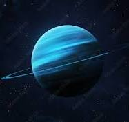

Uran

- Uran je prvi planet, odkrit v sodobnem času.
- Herschel ga je uradno odkril 13. marca 1781, do takrat pa so bili iz antike.
- Urán je zunanji, sedmi planet od Sonca v Osončju.
- Je ledeni orjak (do leta 1990 je spadal v kategorijo plinastih orjakov).
- Kovinski uran reagira s skoraj vsemi nekovinskimi elementi (z izjemo žlahtnih plinov) in njihovimi spojinami, reaktivnost mu narašča s temperaturo.
- Uran-235 je bil prvi izotop, za katerega so ugotovili, da se lahko cepi.
- Daleč največ urana se uporablja v jedrski tehniki za proizvodnjo električne energije ali pa jedrskega orožja.